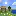
Entrar
Informe seu nome de usuário, edição e versão do jogo.
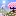
Responda um questionário sobre edição, bioma, modo de jogo e estruturas. O Spawnly devolve seeds verificadas, ordenadas por compatibilidade com o seu estilo.
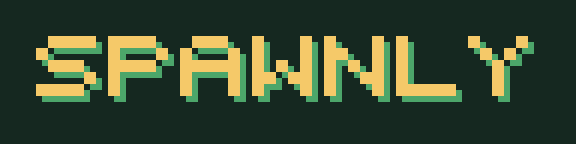
Do cadastro à recomendação, sem login falso e sem seed aleatória: só mundos já registrados e testados no banco.
O questionário cobre os biomas do Overworld, do Nether e do End, cada um com o ícone do próprio jogo.
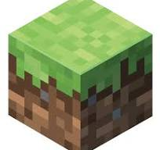
Planícies, florestas, oceanos, cavernas e picos.
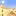
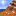
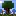
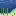
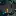
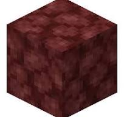
Florestas carmesim e distorcida, vales de areia das almas.
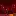
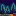
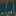
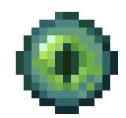
Ilhas centrais e terras altas do End.
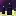
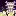
Nenhum botão de enfeite: cada ação conversa com a API REST e com o MySQL/MariaDB.
Cadastrar usuários, preferências e seeds.
Consultar cadastros, catálogo e recomendações.
Editar dados do usuário, filtros e seeds.
Excluir registros mediante confirmação.
Front-end em HTML, CSS e JavaScript puros; back-end em Node.js com Express; dados em MySQL/MariaDB.
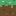
Uma API REST com rotas para usuários, preferências, seeds, catálogos e recomendação.
O app completo precisa do banco de dados. Siga o README do repositório para os detalhes de cada passo.
# 1. clone o mundo git clone https://github.com/vitorandao/Spawnly.git cd Spawnly/backend # 2. instale as dependências npm install # 3. configure o banco em backend/.env DB_HOST=127.0.0.1 DB_PORT=3306 DB_USER=spawnly_app DB_NAME=spawnly_integracao # 4. teste e suba o servidor npm test npm start # → http://localhost:3000
Projeto acadêmico do Centro Universitário do Distrito Federal (UDF).
Modelagem e SQL, páginas HTML5, CSS responsivo e integração dos formulários.
Projeto Node.js, Express e conexão reutilizável com o banco.
CRUD de seeds, usuários e preferências, regras de recomendação e validação.
Testes, documentação e curadoria de seeds.
Suporte ao front-end.